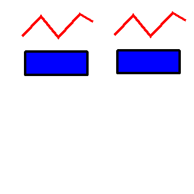

| Source image | Reference image before style changes |
|---|---|
 |
| Test | Purpose | Test Result | Comments |
| Set Stroke Type | NA | Passed if stroke type of right line and rectangle changes to 2 (dashed) | |
| Get Stroke Type | NA | Passed if test result is 2. | |
| Set Stroke Type | NA | Passed if stroke type of right line and rectangle changes to solid (1) | |
| Get Stroke Type | NA | Passed if test result is 1. |